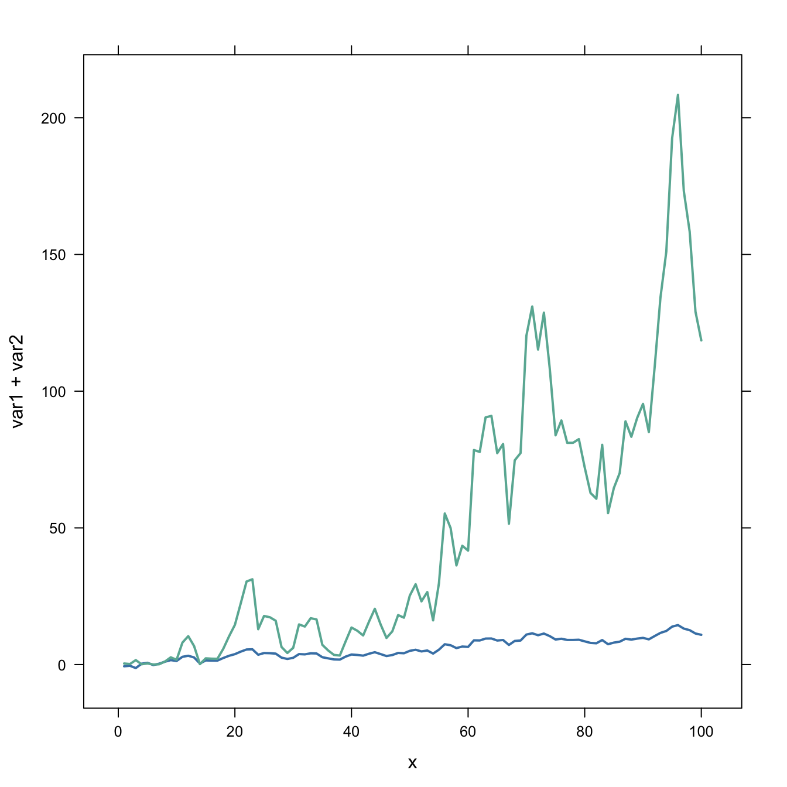
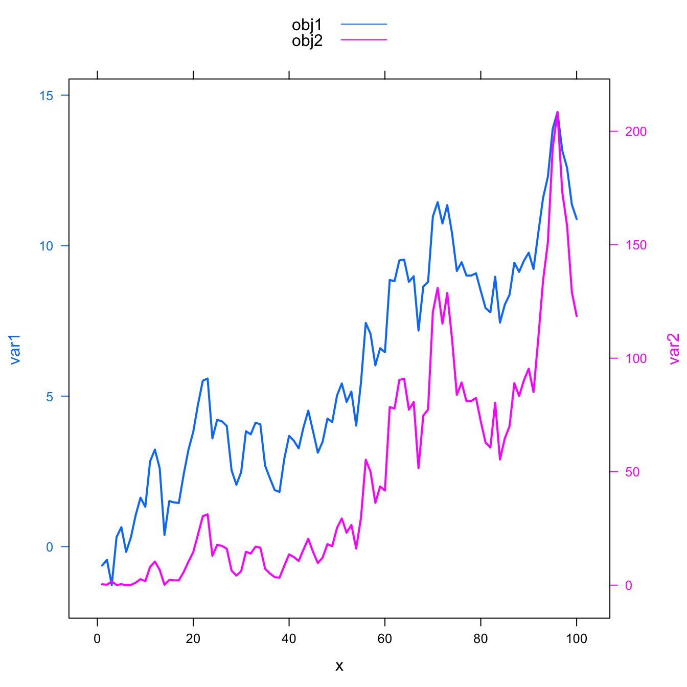

Warning
Warning: a dual Y axis line chart represents the evolution of 2 series, each plotted according to its own Y scale. This kind of chart must be avoided, since playing with Y axis limits can lead to completely different conclusions. Visit data-to-viz for more info.
Usual line chart
Let’s start with an usual line chart displaying the evolution of 2 numeric variables.
This kind of chart can be built using the
line() function. But here the xyplot from
the latticeExtra package is used (we’ll need it later
on.)
One would argue that the exact evolution of the blue variable is hard to read. Another axis could be displayed to zoom on it. This is why the dual axis was born.

#library
library(latticeExtra)
# create data
set.seed(1)
x <- 1:100
var1 <- cumsum(rnorm(100))
var2 <- var1^2
data <- data.frame(x,var1,var2)
# usual line chart
xyplot(var1 + var2 ~ x, data, type = "l", col=c("steelblue", "#69b3a2") , lwd=2)Dual Y axis line chart
The doubleYScale() function of the
latticeExtra package can take 2 outputs of the
xyplot() function to build a dual Y axis line chart.
This chart is truly misleading: it is easy to conclude that both variables follow the same pattern what is totally wrong. Always double check what axis trully are on dual axis chart.
Conclusion: don’t do it!

#library
library(latticeExtra)
# create data
set.seed(1)
x <- 1:100
var1 <- cumsum(rnorm(100))
var2 <- var1^2
data <- data.frame(x,var1,var2)
# --> construct separate plots for each series
obj1 <- xyplot(var1 ~ x, data, type = "l" , lwd=2, col="steelblue")
obj2 <- xyplot(var2 ~ x, data, type = "l", lwd=2, col="#69b3a2")
# --> Make the plot with second y axis:
doubleYScale(obj1, obj2, add.ylab2 = TRUE, use.style=FALSE )Add legend
If you stick to it, here is how to add a legend to the chart:

#library
library(latticeExtra)
# create data
set.seed(1)
x <- 1:100
var1 <- cumsum(rnorm(100))
var2 <- var1^2
data <- data.frame(x,var1,var2)
# --> construct separate plots for each series
obj1 <- xyplot(var1 ~ x, data, type = "l" , lwd=2)
obj2 <- xyplot(var2 ~ x, data, type = "l", lwd=2)
# --> Make the plot with second y axis AND legend:
doubleYScale(obj1, obj2, text = c("obj1", "obj2") , add.ylab2 = TRUE)